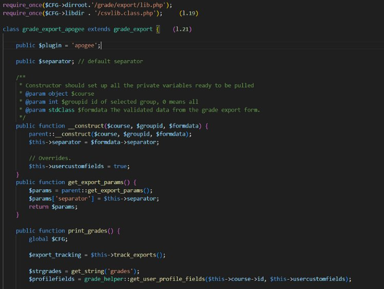
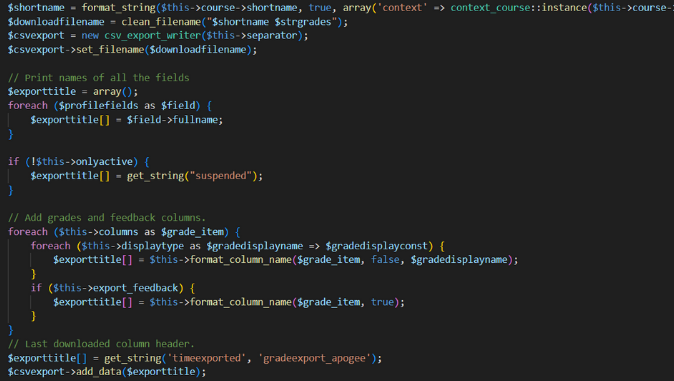
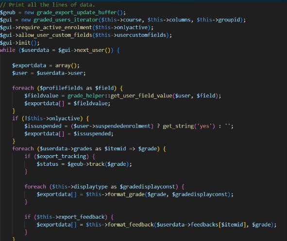
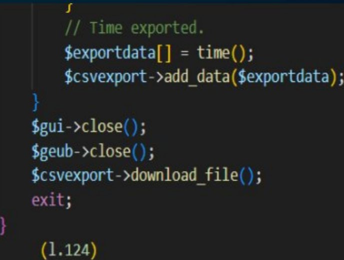

Mes Stages
Dans le programme du BTS SIO spécialisation SLAM, les étudiants sont requis de compléter deux stages pratiques au cours de leur formation, aboutissant à la rédaction d'un rapport final. L'objectif de ce rapport est de mesurer les compétences et connaissances développées par les étudiants au fil de ces expériences, en prenant en compte les thématiques traitées.
Pendant mes deux années de formation, j'ai effectué trois stages : au CAMPUS de Schoelcher, au lycée Joseph Gaillard, puis sur le projet Siper, réalisé à distance pour une structure matricielle. Ces expériences m'ont permis d'approfondir mes connaissances dans les langages et frameworks tels que PHP et Laravel, ainsi que de développer mes compétences en gestion de projets et en résolution de problèmes.
Stage au CAMPUS de Schoelcher
// Description du projet
Au cours de ce stage, j'ai été amené à m'investir dans l'amélioration et l'automatisation de processus cruciaux au sein de l'environnement éducatif. Le cœur du projet portait sur l'automatisation de l'import/export des notes en format CSV entre Ecursus, une plateforme pédagogique complète, et Apogée, le système administratif académique.
// Captures d'écran




// Tâches réalisées
- L'installation et la mise à jour de plugins essentiels au fonctionnement de Moodle, et la localisation de fichiers spécifiques pour l'exportation des données.
- Une étude approfondie et des modifications sur le fichier grade_export_apogee.php pour garantir la bonne réorganisation des données selon les besoins de la plateforme Apogée.
- L'intégration de retours d'évaluations et l'exclusion d'utilisateurs suspendus dans le processus d'exportation.
- La contribution à l'évolution de la base de données en extrayant et en intégrant des données d'étudiants manquants.
- Le transfert des fichiers au maître de stage pour validation avant la mise en production.